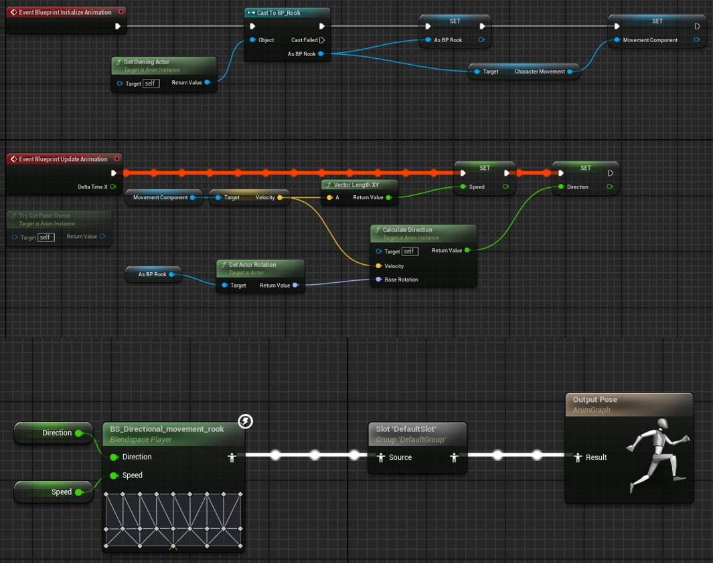
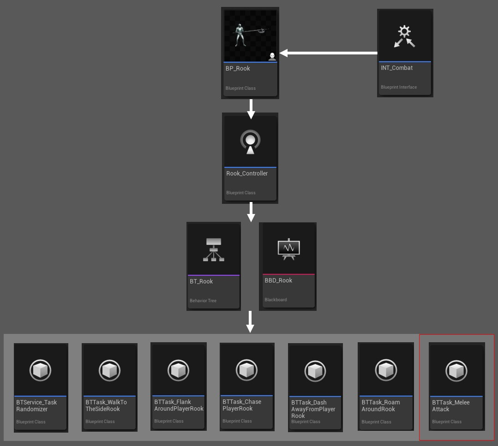
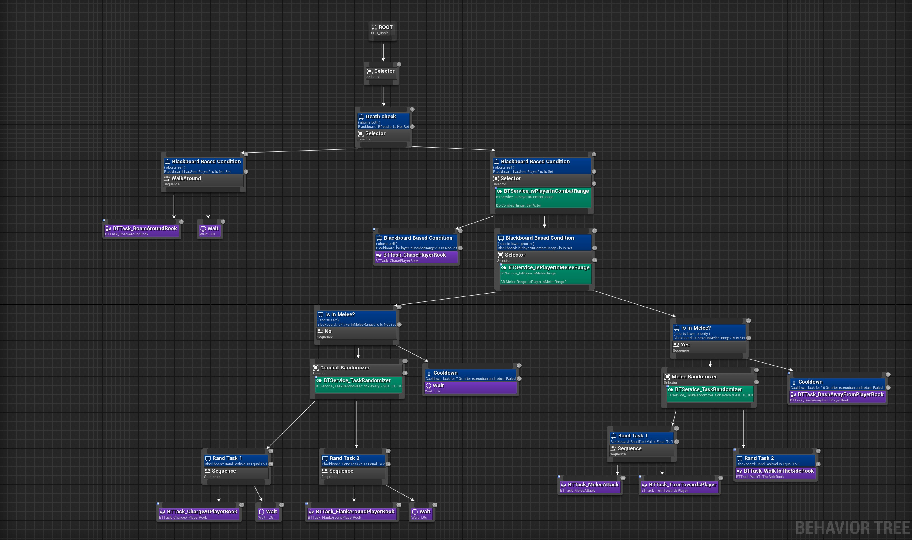
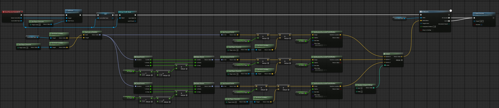

Ai
My main task in this project was the creation of the enemies. Here are some snippets from how one of the enemies functions.
Enemy Blueprint
Base blueprint has a character, weapon and two colliders. Character has a assigned animation blueprint to allow for 8 directional movement blendspace and idle animation. Weapon has a seperate event graph to enable and disable hit detection when animation notify calls for it. The two colliders are used to track if player is within the combat range to swap from just chasing the player to more intelligent behaviour and to track if player is in melee range which changes the character to choose behaviour from melee tasks.

Animation Blueprint
Animation blueprint reads base blueprints speed and direction of movement to change walking animations blendspace to match characters movement.

Ai Controller
Base blueprint gets assigned a INT_combat interface that lets tasks call attack events from base blueprint. Ai Controller is attached to the base blueprint which enables the character to be controlled by the Behaviour tree that is attached to the Ai Controller. Blackboard is attached to the behaviour tree to allow tracking and changing of states. Lastly behaviour tree has a list of tasks and services to make ai's actions more dynamic

Behaviour Tree
Enemy idle behaviour is to roam within a certain radius around their starting location. When player is noticed, enemy starts chasing the player until the player is no longer in sight and is far enough from the enemy. When player is close enough to the enemy, the enemy enters combat behaviour. These are either charging at the player or flanking around them or waiting. When player enters the enemies melee range, they enter the melee behaviour branch. Here they can either attack the player, move around the player or dash away from them.

Example Task
Here is a example code blueprint from the BTTask_WalkToTheSideRook. First enemy focuses on the player, making sure they are facing the right direction. Next a reference is made to the enemy pawn so it can be used later. Lastly character is given a command to move using a formula that is picked randomly from three possible options. All of them start in the same way by getting the look rotation from the enemy to the player. If the random is a 0, code uses that as is to get forward vector from a certain distance from the player. Then it gets added to the location of the player and is used to get a random reachable location in a given radius, which is then returned to the move command as destination. If the random result is 1 or 2, the same is done but the look rotation is rotated either to the left or right instead of just away from the player.
